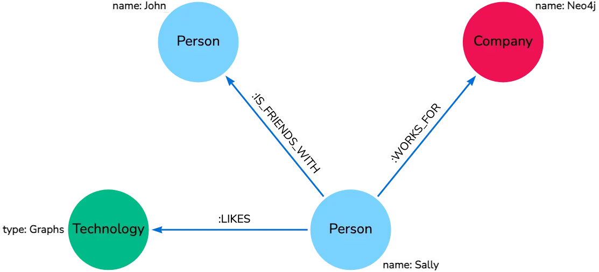
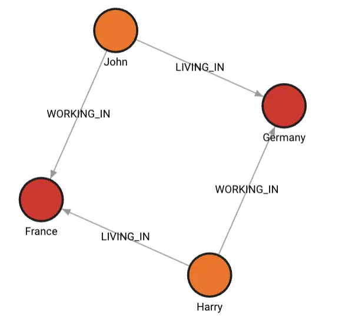

图数据库memgraph 与其查询语言 cypher
Posted on Mon 26 August 2024 in Journal
| Abstract | 图数据库memgraph 与其查询语言 cypher |
|---|---|
| Authors | Walter Fan |
| Category | learning note |
| Status | v1.0 |
| Updated | 2024-08-26 |
| License | CC-BY-NC-ND 4.0 |
简介
Memgraph 是一个专为实时流式处理而构建的高性能图数据库，它与流行的 Neo4j 兼容，并提供了直观的方式来管理和分析相互关联的数据 。Memgraph 的核心优势在于它的 C/C++ 实现和内存优先的架构，这确保了极致的性能，并提供了 ACID 事务的一致性和高可用性 。此外，Memgraph 支持使用 Cypher 查询语言，这是一种广泛接受且易于优化的语言，用于轻松访问和操作数据 。
Cypher 是一种声明式的图查询语言，它允许对图进行高效的查询、更新和管理。Cypher 的设计简单但功能强大，能够容易地表示高度复杂的数据库查询，使开发人员能够专注于他们的领域，而不是迷失在数据库访问中。Cypher 受到 SQL、SPARQL 以及 Haskell 和 Python 等语言的启发，具有高度的表达能力 。
在 Memgraph 中，可以使用 Cypher 语言进行各种操作，例如创建节点和关系、查询和过滤数据、更新属性以及删除节点或关系。Memgraph 还提供了在线的 Playground，允许用户在浏览器中直接试用，无需安装任何软件 。
Cypher 语言的基本语法包括节点、关系和属性等元素。可以使用 CREATE 语句创建节点和关系，使用 MATCH 语句查询节点和关系，使用 WHERE 子句设置过滤条件，使用 RETURN 子句指定返回结果。Cypher 语言的查询操作非常丰富，包括模式匹配、节点查询、关系查询和属性查询等 。
Memgraph 还提供了多租户支持、数据加密、身份验证和授权、监控、单点登录（SSO）、备份和恢复等功能，确保了数据的安全性和系统的可靠性 。此外，Memgraph 允许用户根据自己的工作负载选择不同的存储模式，无论是需要数据一致性、导入和执行分析的强力支持，还是需要存储超出 RAM 内存的大型数据集，Memgraph 都能满足需求 。
总的来说，Memgraph 结合了 Cypher 查询语言的强大功能和 Memgraph 数据库的高性能特性，为用户提供了一个强大且灵活的工具，旨在简化大规模数据处理并加速商业智能的实现 。
Cyper
作为声明式查询语言, SQL 在计算机行业无人不晓, 无人不知. 而 Cypher 就是 Graph Database 图数据库的 SQL.
Cypher 用"圆括号"来表示节点, 用"方括号,连接线及箭头"表示关系
这样一句话 - "Sally likes Graphs. Sally is friends with John. Sally works for Neo4j."
表示为图数据库中的节点和关系

如何表示节点
圆括号表示节点, 其中节点的标签 label 可以用 "node:label" 来表示 例如:
() //anonymous node (no label or variable) can refer to any node in the database
(p:Person) //using variable p and label Person
(:Technology) //no variable, label Technology
(work:Company) //using variable work and label Company
如何表示关系
有向图中的关系就是用箭头来表示的, Cypher 使用箭头 --> 或 <-- 来连接两个节点.
而没有箭头的连接线 -- 表示节点之间的关系是双向的
创建和查询 "Person" 与 "Technology" 之间关系的语句如下
//data stored with this direction 创建关系
CREATE (p:Person)-[:LIKES]->(t:Technology)
//query relationship backwards will not return results 查询关系
MATCH (p:Person)<-[:LIKES]-(t:Technology)
//better to query with undirected relationship unless sure of direction
MATCH (p:Person)-[:LIKES]-(t:Technology)
Relationship types 关系类型
关系类型可以自己定义, 推荐使用动词 (verbs and actions) 例如以下的关系类型
# 莎莉喜欢图
[:LIKES] - makes sense when we put nodes on either side of the relationship (Sally LIKES Graphs)
# 莎莉为 neo4j 工作
[:IS_FRIENDS_WITH] - makes sense when we put nodes with it (Sally IS_FRIENDS_WITH John)
# 莎莉为 neo4j 工作
[:WORKS_FOR] - makes sense with nodes (Sally WORKS_FOR Neo4j)
Relationship variables 关系变量
为查询方便, 可以给关系命名一个变量, 形如 [r] 或 [rel]
Node or relationship properties 节点与关系的属性
节点和关系的属性都可在节点的括号或关系的括号内使用花括号。然后，属性的名称和值放在花括号内。
例如
# 节点属性: p 是节点名, Person 是标签, 属性名是 name, 属性值是 Sally
Node property: (p:Person {name: 'Sally'})
# 关系属性: rel 是属性名, IS_FRIENDS_WITH 是标签, 属性名是 since, 属性值是 2018
Relationship property: -[rel:IS_FRIENDS_WITH {since: 2018}]->
Cypher 中的模式
在 Cypher 中的模式可能通过以上的节点, 关系和属性放在一起来表示, 以逗号分隔.
例如我们要查询模式 "Sally likes Graph", 可以这样表示
(p:Person {name: "Sally"})-[rel:LIKES]->(g:Technology {type: "Graphs"})
通过 memgraph 为启动一个内存图数据库
- 用 docker-compose 启动如下的 memgraph
services:
memgraph:
image: memgraph/memgraph-mage:latest
container_name: memgraph-mage
ports:
- "7687:7687"
- "7444:7444"
command: ["--log-level=TRACE"]
lab:
image: memgraph/lab:latest
container_name: memgraph-lab
ports:
- "3000:3000"
depends_on:
- memgraph
environment:
- QUICK_CONNECT_MG_HOST=memgraph
- QUICK_CONNECT_MG_PORT=7687
通过 docker-compose up -d 启动 memgraph mage 和 lab, 其中
-
memgraph/memgraph-mage - 包 Memgraph 数据库, 命令行接口 mgconsole 和 MAGE 图算法库.
-
memgraph/lab - 包含一个 web 界面 Memgraph Lab 以帮助我们探索存储在 Memgraph 中的数据
打开 http://localhost:3000/ 用如下 cypher 创建节点和关系
CREATE (:Country {name: 'Germany', language: 'German', continent: 'Europe'});
CREATE (:Country {name: 'France', language: 'French', continent: 'Europe'});
MATCH (c1),(c2) WHERE c1.name= 'Germany' AND c2.name = 'France'
CREATE (c2)<-[:WORKING_IN {date_of_start: 2014}]-(p:Person {name: 'John'})-
[:LIVING_IN {date_of_start: 2014}]->(c1);
MATCH (c1),(c2) WHERE c1.name= 'Germany' AND c2.name = 'France'
CREATE (c1)<-[:WORKING_IN {date_of_start: 2014}]-(p:Person {name: 'Harry'})-[:LIVING_IN {date_of_start: 2013}]->(c2);
# 查询所有的节点和关系
MATCH (n)-[r]->(m) RETURN n,r,m;

Reference
本作品采用 ChatGPT 辅助创作。